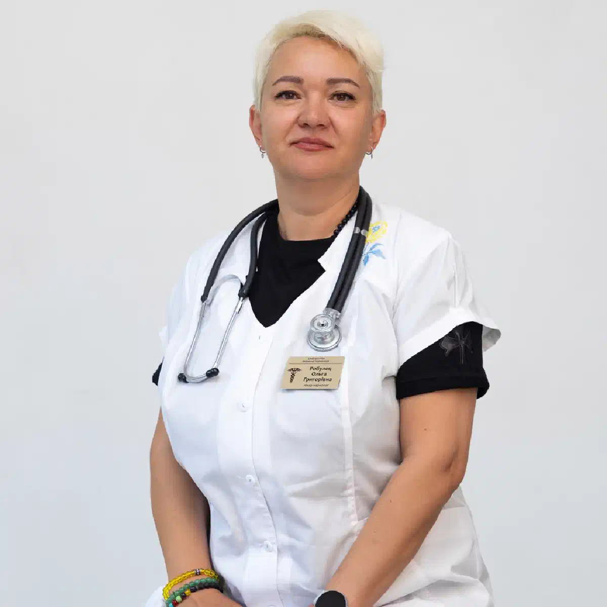

+38(068)
79 72 782
+38(068)
79 72 782Лечение алкоголизма у военных
Наркологическая помощь в Харькове


Бесплатная консультация, работаем круглосуточно 24/7
Наркологическая помощь в Харькове

Дата написания: Обновляется...
Последнее обновление: Обновляется...
Лечение алкоголизма у военных в Харькове требует деликатного, конфиденциального и комплексного подхода. Военнослужащие регулярно сталкиваются с повышенными физическими и психологическими нагрузками, нарушением сна, тревожностью, эмоциональным истощением и последствиями травмирующих событий. В некоторых случаях алкоголь становится способом временно снизить внутреннее напряжение, однако постепенно такое употребление может перерасти в зависимость.
Алкогольная зависимость влияет не только на физическое здоровье, но и на эмоциональное состояние, отношения с близкими, способность выполнять профессиональные обязанности и сохранять контроль над поведением. Со временем повышается переносимость спиртного, возникают запои, провалы в памяти и абстинентный синдром после прекращения употребления.
Помощь может включать консультацию нарколога, выведение из запоя, инфузионную терапию, лечение в стационаре, психотерапию, кодирование и реабилитацию. Программа подбирается индивидуально с учётом состояния военнослужащего, продолжительности употребления, наличия хронических заболеваний, психологических травм и принимаемых лекарств. В Харькове наркологическая помощь может предоставляться на дому, амбулаторно или в стационаре. При судорогах, галлюцинациях, потере сознания, выраженной дезориентации, боли в груди или затруднённом дыхании необходимо немедленно обращаться за экстренной медицинской помощью.
Военнослужащие могут испытывать продолжительный стресс, связанный с опасностью, повышенной ответственностью, физической усталостью и недостатком полноценного отдыха. После возвращения из зоны боевых действий внутреннее напряжение может сохраняться даже в спокойной обстановке. Алкоголь иногда используется для временного уменьшения тревоги, облегчения засыпания или эмоционального отключения от тяжёлых воспоминаний. Однако регулярное употребление не устраняет причину напряжения, а лишь ненадолго подавляет симптомы.
Постепенно человеку требуется всё больше спиртного для достижения привычного эффекта. Формируется толерантность, а попытки отказаться от алкоголя сопровождаются раздражительностью, бессонницей, дрожью, тревогой и ухудшением самочувствия. Дополнительными факторами риска могут быть перенесённые травмы, хроническая боль, конфликты в семье, ощущение одиночества, сложности с адаптацией к мирной жизни и отсутствие своевременной психологической поддержки.
Боевой стресс способен длительно влиять на работу нервной системы. Человек может оставаться постоянно напряжённым, остро реагировать на громкие звуки, испытывать тревогу, раздражительность, трудности с концентрацией и повторяющиеся неприятные воспоминания. На этом фоне алкоголь может восприниматься как быстрый способ расслабиться. После употребления внутреннее напряжение временно уменьшается, однако затем тревожность и нарушения сна нередко усиливаются. Возникает замкнутый круг: человек употребляет, чтобы облегчить состояние, а последствия алкоголя создают новые причины для повторного употребления.
Регулярное употребление также ухудшает способность нервной системы восстанавливаться после стресса. Снижается эмоциональный контроль, усиливается раздражительность, появляются конфликты и импульсивное поведение. Лечение должно включать не только отказ от алкоголя, но и работу с последствиями боевого стресса. Военнослужащему могут потребоваться консультации нарколога, психолога или психотерапевта, восстановление сна и обучение безопасным способам снижения напряжения.
Алкогольная зависимость может развиваться постепенно и долго оставаться незаметной для самого человека. Одним из первых признаков становится увеличение частоты употребления. Спиртное начинает использоваться после службы, для сна, снятия тревоги или восстановления после тяжёлого дня. Со временем увеличивается доза, а попытки ограничить употребление становятся безуспешными. Военнослужащий может скрывать количество выпитого, употреблять в одиночестве, раздражаться при обсуждении проблемы и отрицать влияние алкоголя на своё состояние. При формировании физической зависимости после отказа от спиртного возникают дрожь, повышенная потливость, тошнота, бессонница, тревожность, учащённое сердцебиение и колебания давления. Для облегчения этих симптомов человек может принимать новую порцию алкоголя.
При многодневном употреблении и выраженном ухудшении самочувствия может потребоваться срочный выход из запоя под наблюдением врача. Специалист оценивает состояние пациента и определяет, можно ли проводить помощь на дому или необходима госпитализация. Опасными признаками являются провалы в памяти, агрессивность, потеря контроля, галлюцинации, судороги и резкое изменение поведения. Такие состояния требуют профессиональной медицинской помощи.
Алкоголь может на короткое время создавать ощущение расслабления, однако он не лечит тревожность и не устраняет последствия психологической травмы. После прекращения действия спиртного беспокойство часто возвращается и может становиться ещё сильнее. Регулярное употребление нарушает естественные механизмы восстановления нервной системы. Человеку становится сложнее справляться со стрессом без алкоголя, снижается эмоциональная устойчивость и усиливается раздражительность.
Особенно опасно сочетать спиртное с успокоительными, снотворными, обезболивающими и другими препаратами. Такое сочетание может привести к выраженной сонливости, снижению давления, нарушению координации и угнетению дыхания. В ходе лечения важно подобрать безопасные способы работы с тревогой. Они могут включать психотерапию, восстановление режима дня, физическую активность по состоянию здоровья, поддержку семьи и назначенную врачом медикаментозную терапию.
Нарушения сна часто становятся одной из причин регулярного употребления алкоголя. Военнослужащий может выпивать вечером, чтобы быстрее уснуть и временно снизить внутреннее напряжение. Алкоголь действительно способен ускорить засыпание, но качество сна при этом ухудшается. Сон становится поверхностным и прерывистым, человек чаще просыпается, а утром ощущает слабость, раздражительность и отсутствие полноценного отдыха.
При регулярном употреблении также могут возникать провалы в памяти после алкоголя , когда человек частично или полностью не помнит события, происходившие в состоянии опьянения. Такие эпизоды указывают на выраженное воздействие спиртного на работу головного мозга и требуют консультации специалиста, особенно если они повторяются.
При длительном употреблении формируется зависимость между засыпанием и алкоголем. Без спиртного появляются бессонница, тревога, яркие сновидения, потливость и учащённое сердцебиение. Человек снова употребляет, чтобы уснуть, поддерживая развитие зависимости. Восстановление сна является важной частью лечения. После детоксикации врач оценивает причины бессонницы и подбирает безопасную терапию. Самостоятельно принимать сильнодействующие снотворные или успокоительные после алкоголя опасно.
Анонимное выведение из запоя в Харькове позволяет военнослужащему получить медицинскую помощь без осуждения и разглашения личной информации. Нарколог проводит осмотр, оценивает продолжительность употребления, симптомы абстиненции и возможные осложнения.
Перед началом лечения врач измеряет давление, пульс, уровень кислорода в крови и оценивает состояние сознания. Обязательно учитываются хронические заболевания, перенесённые травмы и лекарства, которые пациент принимает постоянно.
Помощь может предоставляться дома или в стационаре. Домашний формат допустим только при относительно стабильном состоянии. Если у человека наблюдаются судороги, психоз, галлюцинации, потеря сознания или выраженная дезориентация, необходима госпитализация. Полностью анонимное выведение из запоя в Харькове на дому или стационаре помогает стабилизировать физическое состояние, однако не устраняет психологические причины употребления. После детоксикации важно продолжить лечение зависимости.
Анонимная консультация нарколога помогает оценить степень зависимости и определить безопасный формат помощи. Пациент может конфиденциально рассказать о продолжительности употребления, частоте запоев, количестве алкоголя и симптомах после прекращения употребления. Во время консультации врач уточняет наличие хронических заболеваний, психологических травм, нарушений сна и препаратов, которые принимает военнослужащий. Особенно важно сообщить о сочетании алкоголя с обезболивающими, снотворными или успокоительными средствами.
Консультация нарколога в лечении алкоголизма может проводиться в медицинском учреждении или дома. После осмотра врач объясняет, требуется ли детоксикация, можно ли проводить лечение на дому и есть ли показания к стационару. Конфиденциальный подход помогает человеку сделать первый шаг к лечению без страха осуждения. Чем раньше начинается терапия, тем ниже риск повторных запоев и тяжёлых осложнений.
Стоимость лечения алкоголизма у военных в Харькове начинается от 2199 грн
| Популярные услуги | Цена |
|---|---|
| Нарколог Харьков | От 1500 грн |
| Капельница от алкоголя | От 2199 грн |
| Вывод из запоя на дому | От 2199 грн |
| Кодирование от алкоголизма | От 6000 грн |
Выведение из запоя является первым этапом лечения, если военнослужащий длительно употреблял алкоголь и не может самостоятельно прекратить запой. Основная задача медицинской помощи — безопасно остановить употребление, уменьшить интоксикацию и снизить риск осложнений. Лечение может включать инфузионную терапию, коррекцию обезвоживания и электролитных нарушений, витамины и симптоматические препараты. Конкретный состав назначается после осмотра пациента.
Резкое прекращение длительного употребления без медицинского контроля может привести к судорогам, психозу и алкогольному делирию. Поэтому врач оценивает продолжительность запоя, время последней дозы и наличие осложнений в прошлом. После стабилизации физического состояния необходимо перейти к психотерапии, противорецидивной поддержке и реабилитации. Одна капельница для выведения из запоя облегчает симптомы, но не устраняет зависимость.
Стационарное лечение рекомендуется при тяжёлой абстиненции, длительном запое, выраженном истощении, психозе, судорогах, нарушении сознания и серьёзных хронических заболеваниях. В стационаре пациент находится под круглосуточным наблюдением. Врачи контролируют давление, пульс, дыхание, температуру и неврологическое состояние. При необходимости проводятся анализы, электрокардиограмма и другие обследования.
Вывод из запоя в стационаре позволяет оперативно корректировать лечение при изменении состояния. Пациент не имеет доступа к алкоголю и получает необходимую медикаментозную, психологическую и бытовую поддержку. После детоксикации военнослужащий может продолжить психотерапию и подготовку к реабилитации. Продолжительность стационарного лечения зависит от тяжести состояния и динамики восстановления.
После детоксикации физические симптомы постепенно уменьшаются, но психологическая тяга к алкоголю может сохраняться. Поэтому психотерапия становится вторым важным этапом лечения зависимости. Во время работы со специалистом военнослужащий учится распознавать ситуации, которые вызывают желание употребить алкоголь. Отдельное внимание уделяется боевому стрессу, тревоге, раздражительности, бессоннице и сложностям адаптации.
Особенно важна психотерапия при алкогольной энцефалопатии , поскольку после стабилизации физического состояния пациенту может потребоваться длительное восстановление эмоционального контроля, поведения и способности справляться со стрессом без употребления спиртного. При этом программа подбирается с учётом когнитивных нарушений и общего состояния человека.
Психотерапия помогает формировать новые способы расслабления, восстановления и решения конфликтов. Она может проводиться индивидуально, в группе или вместе с родственниками. Регулярная работа со специалистом снижает риск повторного срыва. Наиболее устойчивый результат достигается, когда военнослужащий продолжает психотерапию даже после улучшения самочувствия.
Пивной алкоголизм нередко воспринимается как менее опасная форма зависимости. Однако регулярное употребление нескольких бутылок пива может приводить к поступлению значительного количества алкоголя и постепенной утрате контроля. У человека формируется привычка пить после службы, для отдыха или улучшения сна. Со временем увеличивается объём напитка, появляются отёки, нарушения сна, колебания давления и проблемы с сердечно-сосудистой системой.
Лечение пивной зависимости включает отказ от спиртного, медицинское обследование, психотерапию и изменение ежедневных ритуалов. При наличии абстиненции может потребоваться детоксикация. Важно работать не только с количеством выпитого, но и с привычкой использовать алкоголь как основной способ расслабления. После стабилизации могут применяться кодирование и реабилитационные программы.
Алкогольная зависимость у женщин-военнослужащих может долго оставаться скрытой. Женщина может употреблять в одиночестве, скрывать проблему от коллег и родственников и откладывать лечение из-за страха осуждения. Причинами употребления могут становиться хронический стресс, эмоциональное истощение, тревожность, последствия травмирующих событий и нарушения сна. Алкоголь временно снижает напряжение, но постепенно формирует зависимость.
Лечение женского алкоголизма должно проводиться конфиденциально и без давления. Программа может включать детоксикацию, обследование организма, психотерапию, восстановление сна и работу с эмоциональным состоянием. Комплексный подход помогает устранить не только физические последствия употребления, но и причины, которые поддерживают зависимость.
После детоксикации и начала психотерапевтической работы военнослужащему может быть рекомендовано кодирование от алкоголизма уколом. Процедура создаёт дополнительный барьер перед повторным употреблением и помогает закрепить мотивацию к трезвости. Препарат и срок действия подбираются индивидуально после консультации нарколога. Перед процедурой врач оценивает состояние пациента, период трезвости, наличие хронических заболеваний и противопоказаний.
Некоторые методы основаны на несовместимости препарата с алкоголем, другие направлены на снижение эффекта от его употребления. Конкретный вариант выбирается только специалистом после обследования. Кодирование от алкоголизма уколом дисульфирам нельзя проводить в состоянии опьянения, выраженной абстиненции, психоза или тяжёлого ухудшения самочувствия. Процедура выполняется добровольно и не заменяет психотерапию и реабилитацию.
Реабилитация направлена на закрепление трезвости и возвращение человека к полноценной жизни. Она начинается после стабилизации физического состояния и может проходить амбулаторно или в специализированном центре. Программа включает работу с причинами зависимости, восстановление сна, эмоционального состояния и отношений с близкими. Военнослужащий учится справляться со стрессом без алкоголя и распознавать ранние признаки возможного срыва.
Важную роль играет поддержка семьи. Родственникам необходимо научиться помогать человеку без давления, угроз и постоянного контроля. Семейные консультации позволяют снизить количество конфликтов и сформировать более здоровые отношения. Продолжительность реабилитации зависит от тяжести зависимости, психологического состояния и мотивации пациента. Регулярное наблюдение снижает риск повторного употребления.
Капельница от алкоголя для военных на дому может применяться при интоксикации или абстинентном синдроме, если состояние пациента не требует госпитализации. Перед процедурой нарколог проводит осмотр и оценивает основные показатели организма. Инфузионная терапия помогает восполнить жидкость и электролиты, уменьшить тошноту, слабость, дрожь и другие симптомы. Дополнительные препараты назначаются индивидуально с учётом состояния нервной и сердечно-сосудистой систем.
Домашняя капельница не подходит при судорогах, галлюцинациях, нарушении сознания, сильной боли в груди или затруднённом дыхании. В таких случаях необходимо лечение в стационаре. Капельница от алкоголя на дому помогает стабилизировать состояние, но не лечит алкогольную зависимость. После процедуры военнослужащему рекомендуется продолжить комплексную терапию.
Для военнослужащих могут предоставляться специальные условия, льготы и скидки на наркологическую помощь. Они могут распространяться на вызов врача, детоксикацию, курс инфузионной терапии, консультации или отдельные программы лечения. Размер скидки зависит от выбранной услуги, формата лечения и текущих условий медицинской службы. Информацию о стоимости и необходимых документах желательно уточнить при обращении.
Льготные условия позволяют быстрее получить помощь и не откладывать лечение из-за финансовых трудностей. При этом медицинская программа подбирается исходя из состояния пациента, а не только стоимости процедуры. Помощь может предоставляться анонимно и конфиденциально. Личная информация пациента не должна разглашаться посторонним без предусмотренных законом оснований.
Срочная наркологическая помощь в Харькове доступна при длительном запое, выраженной интоксикации, абстинентном синдроме и резком ухудшении состояния после прекращения употребления.
При обращении необходимо сообщить возраст военнослужащего, продолжительность запоя, время последнего употребления, основные симптомы и принимаемые препараты. Эта информация помогает врачу подготовиться к вызову. После приезда нарколог осматривает пациента и определяет безопасный формат помощи. При относительно стабильном состоянии лечение может проводиться дома. При высоком риске осложнений рекомендуется госпитализация.
Особенно опасны потеря сознания, судороги, галлюцинации, сильная боль в груди, нарушение речи, слабость конечностей и затруднённое дыхание. При таких симптомах необходимо немедленно вызывать экстренную медицинскую помощь. Лечение алкоголизма у военных в Харькове должно включать не только детоксикацию, но и последующую психотерапию, кодирование по показаниям и реабилитацию. Комплексный подход помогает восстановить здоровье, снизить риск повторных запоев и вернуть человеку контроль над своей жизнью.
Для вызова нарколога на дом в Харькове звоните: +38(050-021-69-57)

Статья проверена экспертом
Могучев Станислав
Врач терапевт, ординатор
Возможно интересная статья:
Янтарная кислота, Бетаргин и Энтеросгель при алкогольной интоксикации

Да, мы строго соблюдаем полную конфиденциальность на всех этапах лечения. Информация о пациенте, диагнозе и прохождении терапии не передаётся третьим лицам. Обращение к нам не влечёт постановку на учёт. Вы можете быть уверены в безопасности и анонимности.
Программа лечения разрабатывается индивидуально после консультации со специалистом. Учитываются вид зависимости, её длительность, физическое и психологическое состояние пациента. Такой подход позволяет повысить эффективность терапии и снизить риск срыва. Мы не используем шаблонные решения.
Да, мы сопровождаем пациентов и после основного курса лечения. Проводятся консультации, рекомендации по адаптации и профилактике рецидивов. При необходимости возможна дальнейшая психологическая поддержка. Это помогает сохранить результат и вернуться к полноценной жизни.
Анонимно

Ну в хлопців просто золоті руки й світла голова, мене капали Олексій та Владислав, буквально за декілька сеансів я наче заново народився, до цього пив більше 3х тижнів, не міг зупинитись, дуже радий що знайшов саме цих спеціалістів, всім рекомендую
Анонимно
В течение нескольких лет я злоупотреблял алкоголь, что привело к увольнению с работы и вызвало у меня мысли о суициде. Понимая, что такой образ жизни неприемлем, я обратился за помощью в клинику “Амбрела”. Здесь я смог преодолеть свою зависимость от спиртного благодаря заботливым и опытным врачам, а также эффективной системе лечения. Спустя более года я полностью избавился от желания употреблять алкоголь, и теперь моя жизнь вернулась в норму. Я даже не приближаюсь к спиртному! Благодарю врачей клиники “Амбрела” за их помощь и заботу.
Анонимно
Я обращался за помощью в различные клиники, пытаясь избавиться от своей зависимости от алкоголя, но без особых успехов. Никак не мог справиться с желанием прибегнуть к бутылке, пока друг не посоветовал мне обратиться в центр “Амбрелла”. Я записался на прием и был поражен заботливым отношением к пациентам. Уже прошло два года, и теперь я смотрю на алкоголь с абсолютной равнодушием, активно занимаюсь спортом и улучшил отношения в семье. Благодаря центру “Амбрелла” моя жизнь была спасена от алкогольной зависимости!
Анонимно
Хочу выразить свою благодарность врачам из центра алкоголизма “Амбрела” за то, что они буквально спасли мою жизнь. В течение последнего года я сильно увлекался питьем, и все это привело к катастрофическим последствиям. Хотя я ходил на терапевтические сеансы, но безрезультатно. Тогда я нашел адрес клиники “Амбрела” в интернете, изучил отзывы и информацию о центре, и записался на прием. Там мне сразу предложили методику лечения, которая помогла не только справиться с физической ломкой, но и психической зависимостью от алкоголя. Не буду распространяться, скажу только одно - после пребывания в этой клинике я стал другим человеком, и навсегда забыл, что такое привкус алкоголя. Больше меня не тянет на это! Я искренне верю, что в центре “Амбрела” трудятся настоящие целители душ!
Анонимно
После сложного развода мой сын начал подавлять свою обиду и горе употреблением алкоголя. Он старался скрывать это от меня, но я, как мать, почувствовала, что что-то не так. В конечном итоге, ситуация стала критической. Моя знакомая посоветовала мне обратиться в клинику “Амбрела”. Я была приятно удивлена их работой! Они помогли сыну преодолеть очередной период злоупотребления алкоголем, и с тех пор прошел уже более года, и он совсем не пьет.
Анонимно
Благодаря вашей помощи, моя семья была спасена. Я с трудом уговорила мужа начать лечение, и последний каплей был пьяное ДТП. К счастью, в аварии никто не пострадал, но это был для него сигнал к действию. Он наконец согласился пройти курс лечения на дому, в стационар не хотел ложиться. Лечение было трудным, и были моменты, когда срыв был настолько близок, но благодаря вашему центру Амбрелла мы справились с этим.
Анонимно
Для меня эта клиника стала настоящим спасением! Долгое время я упорно отказывался от лечения, уверен был, что со мной все в порядке. Но к счастью, семья уговорила меня попробовать. И сегодня я чувствую себя невероятно счастливым, осознавая, что мне абсолютно не нужен алкоголь. Огромное спасибо за помощь и поддержку, которые я получил здесь! Я благодарен вам за новую возможность жить полноценной и счастливой жизнью!
Анонимно
Выражаю благодарность ребятам, которые оказали мне помощь и не отвернулись. Уже 10 месяцев я остаюсь чистой. Благодарю за то, что помогли найти новый путь в моей жизни.
Номер телефона:
+380 (68) 797 27 82
+380 (50) 021 69 57
Адрес наркологического центра вашего города уточняйте по
телефону
Работаем в: Киеве, Одессе, Львове, Харькове, Днепре,
Запорожье, Черкассах, Чугуеве, Черноморске, Каменском
Telegram: t.me/umbrellaplus
График работы: Круглосуточно